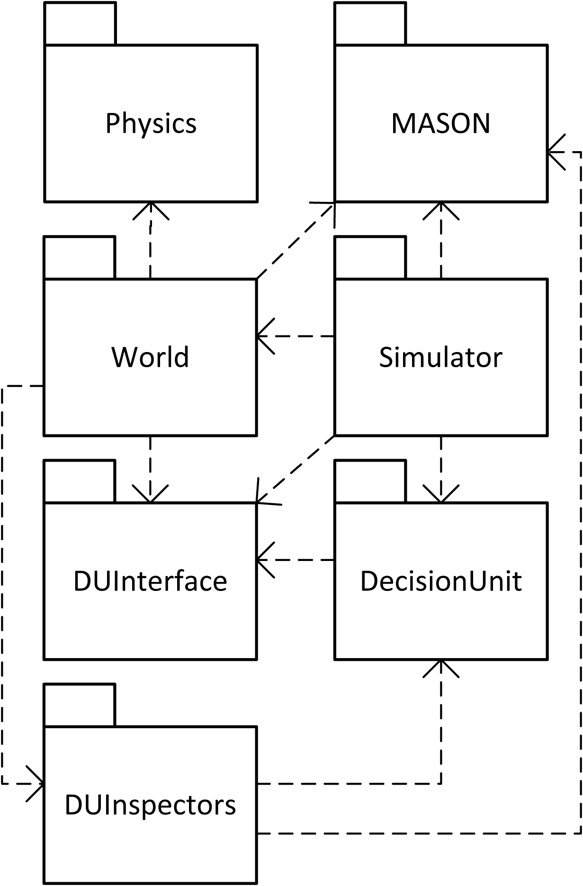

The ARSIN World simulator is an artificial life simulation platform. It was created to serve as a test platform for the psychoanalytically inspired control architecture developed by project ARS. A temporal firewall decouples the control architecture implementations from the simulation engine (Sim) and the world definition (BW).
| Projects | |
|---|---|
| World | All entities and the world is defined here. This project provides the bodies for the entities and the internal systems, sensors, and actuators. The control architectures/decision units are accessed via a brain socket. Further, body related inspectors for the MASON environment are implemented in this project. |
| Decision Unit Interface | This project provides the classes for the temporal firewall between simulation/body and the control architecture. All sensor data is converted into (pre-) symbols and the actuator commands are retransformed to the form needed in BW. Additionally, static tools and factories that are needed by the bubble world and the decision units are stored here. |
| Decision Unit MASON Inspectors | Inspectors that display information on the used control architecture/decision unit. Tightly connected to the decision unit project. |
| Decision Unit v38 | The implementation of the decision unit version 38 is done in this (sub-) project. This javadoc contains selected packages from the Decision Unit project. |
| Sim | In project Sim/Simulator, all things are implemented that are related with loading/creating the world and the basic MASON simulation loop. It contains the "executables" of the ARSIN World Simulator. |
| MASON | Welcome to MASON, a simulator designed for simple-multiagent simulations, or to be used as a core library inside more sophisticated multiagent simulators. MASON was written by Sean Luke, Gabriel Catalin Balan, and Liviu Panait. Additional code and apps were written by Daniel Kuebrich and Sean Paus. Much help was provided by Claudio Cioffi-Revilla and Ken De Jong. MASON is a joint effort of George Mason University's Evolutionary Computation Laboratory (in the Computer Science Department), and GMU's Center for Social Complexity. Currently, MASON v13 is used for ARSIN World Simulator. |
| Physics | The package is intended to implement a 2D rigid body physics simulation system in MASON and pure, 100% Java. The goal is to be both fast and highly portable. We may at some point examine also doing a 3D physics simulation environment using odejava (see http://odejava.org/). In the meantime, if you want a 3D physics simulation system, we recommend examing Breve (http://www.spiderland.org/breve/), which isn't in Java but is pretty impressive (and with a highly responsive developer). The physic simulator uses MASON's Continuous2D class for storage of objects for drawing purposes but uses its own data structures for computing neighborhood information, interactions, etc. The system provides for a variety of constraints, collision response, some basic floor friction, arbitrary forces, etc. The package will only run with MASON 9 or above because it uses the double-valued Heap class. |
 The whole project is divided into seven sub-projects (Details in the figure are omitted not to occlude the diagram. The sub-project at the origin of an arrow accesses classes which are contained by the sub-project the arrow points at.). The reason for this design decision is to keep the various sub-projects as independent from each other as possible. The control architectures which are part of sub-project DecisionUnit are totally independent from the multi-agent framework in sub-project MASON. The main sub-project is Simulator. It is responsible for world creation and contains the scheduler described above. Each entity is created with its optional decision unit. How an entity is defined in detail is implemented in sub-project World. It contains things like the sensors, the bodies, interaction possibilities, and utilizes the two interfaces to the physics engine provided by Physics. In sub-project DUInterface, common classes needed for the decision unit framework are implemented. MASON provides several inspectors to view internal states of the agents. Body and entity related inspectors are stored in World. The ones necessary to view internal states of a decision unit are stored in DUInspectors. With this design, all three main parts of the simulation - the multi-agent simulation framework, the ARSIN world, and the decision units - can be exchanged without the need of changing much in the other sub-projects.
{kind=link}